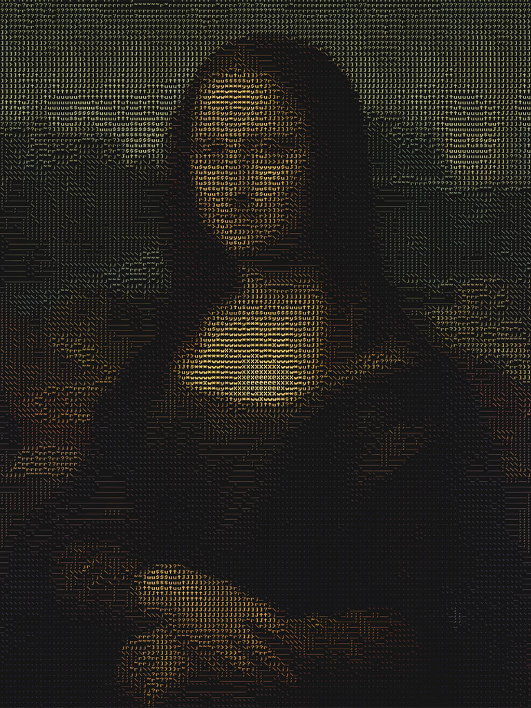
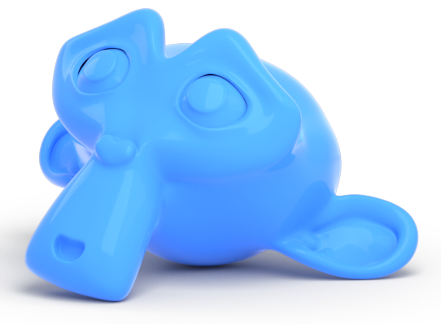

<body></body>
  <link rel="stylesheet" type="text/css" href="style.css" media="screen"/>
  <script src="https://code.jquery.com/jquery-3.6.0.js"></script>
  <script type="text/javascript">
    $(document).on('scroll', function(){
      $('.header-img').css("bottom", Math.max(window.scrollY / 3) + "px");
      $('.center-all').css("transform", "translateY(" + -Math.max(window.scrollY * .05) + "px)");
    })
  </script>
  <div class="navbar">
    <a class="navbutton" href="#home">Главная</a>
    <a class="navbutton" href="#s1">Что такое искусство?</a>
    <a class="navbutton" href="#s2">ASCII art</a>
    <a class="navbutton" href="#s3">Blender</a>
    <a class="navbutton" href="#s3">Игры</a>
  </div>
  <div class="header-img"></div>
  <div class="site">
    <head>
      <div class="center">
        <header id="home">
          <div class="header" style="box-sizing: border-box;">
            <h1>Информатика как искусство</h1>
            <h2 class="angle">Взгляни на информатику с другого угла</h2>
          </div>
        </header>  
      </div>  
    </head>
    <div class="content">
      <div class="center-all" id="s1">
        <div class="div">
          <h2>Что такое искусство?</h2>
          <a>Искусство — это одна из наиболее общих категорий эстетики, искусствознания и художественной практики. Обычно под искусством подразумевают образное осмысление действительности; процесс и итог выражения внутреннего и внешнего мира.</a>
        </div>
      </div>
      <div class="center-all" id="s2">
        <div class="div">
          <h2>ASCII art</h2>
          <a>ASCII art — это форма изобразительного искусства, использующая символы ASCII для представления изображений. При создании такого изображения используется палитра, состоящая из буквенных, цифровых символов и символов знаков пунктуации из числа 95 символов таблицы ASCII. По причине высокой вероятности различий в представлении на системах с национальными вариантами таблицы остальные 160 символов, как правило, не используются (могут быть использованы символы псевдографики).</a>
        </div>
        <div class="zoom">
          
          <figcaption class="center" style="position: absolute; padding: 5px;">Наведите, чтобы увеличить</figcaption>
        </div>
      </div>
      <div class="center-all" id="s3">
        
        <div class="div">
          <h2>Искусство в Blender</h2>
          <a>Blender - это свободное и открытое программное обеспечение для создания трёхмерной компьютерной графики, моделирования, скульптинга, анимации, симуляции, рендеринга, монтажа видео, а также создания 2D-анимаций.
          <br>В Blender'е можно создавать настоящие шедевры электронного искусства: замки, города, горы, пустыни, все это можно создать, имея при себе программное обеспечение, а также немного фантазии.
          </a>
        </div>
      </div>
      <div class="center-all" id="s4">
        <div class="div">
          <h2>Искусство в играх</h2>
          <a>Может ли быть Искусство в играх? Очевидно, может. Например, игра "</a><a class="link" target="_blank" href="https://www.minecraft.net">Minecraft</a><a>" - компьютерная инди-игра в жанре песочницы, созданная шведским программистом Маркусом Перссоном и выпущенная его компанией Mojang AB.</a>
        </div>
      </div>
      <div class="center-all" id="s4">
        <div class="div">
          <h2>Список интернет ресурсов</h2>
          <a>Фотографии:</a>
          <br><a>Задний фон - шары: </a><a class="link" target="_blank" href="https://crystalgoods.ru/novosti/novost-pokupayte-gradkie-shary">https://crystalgoods.ru/novosti/novost-pokupayte-gradkie-shary</a>
          <br><a>Обезьяна: </a><a class="link" target="_blank" href="https://blendergrid.com/learn/articles/compositing-transparent-background-renders-for-the-web">https://blendergrid.com/learn/articles/compositing-transparent-background-renders-for-the-web</a>
          <br><a>Мона Лиза: </a><a class="link" target="_blank" href="Мона Лиза - https://cultura.biografieonline.it/vuk-cosic-ascii-art/ascii-art-gioconda">Мона Лиза - https://cultura.biografieonline.it/vuk-cosic-ascii-art/ascii-art-gioconda</a>
          <br><br>
          <a>Тексты:</a>
          <br><a>Искусство: </a><a class="link" target="_blank" href="https://crystalgoods.ru/novosti/novost-pokupayte-gradkie-shary">https://crystalgoods.ru/novosti/novost-pokupayte-gradkie-shary</a>
          <br><a>ASCII art: </a><a class="link" target="_blank" href="https://ru.wikipedia.org/wiki/ASCII-графика">https://ru.wikipedia.org/wiki/ASCII-графика</a>
          <br><a>Blender: </a><a class="link" target="_blank" href="https://ru.wikipedia.org/wiki/Blender">https://ru.wikipedia.org/wiki/Blender</a>
          <br><a>Minecraft: </a><a class="link" target="_blank" href="https://ru.wikipedia.org/wiki/Minecraft">https://ru.wikipedia.org/wiki/Minecraft</a>
        </div>
      </div>
    </div>
  </div>
  <footer>
    <p>©2022 Zgoly | lioshahihluha@gmail.com</p>
  </footer>
</body>
